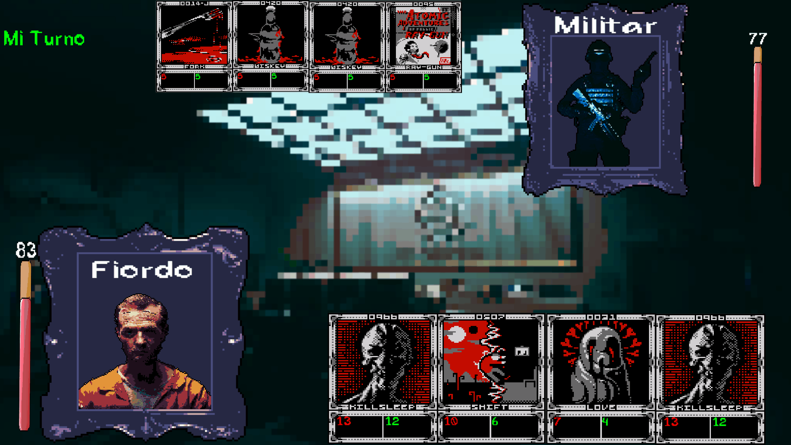

Proyectos
Esta es una lista de los proyectos publicados en los que he trabajado o estoy trabajando.
SCP breakdown

Este juego fue mi trabajo final del primer año de DAM-VIOD en ENTI. Mi principal rol en este proyecto fue ser el productor del juego, aunque también programé, hice parte del arte y compuse gran parte la música.